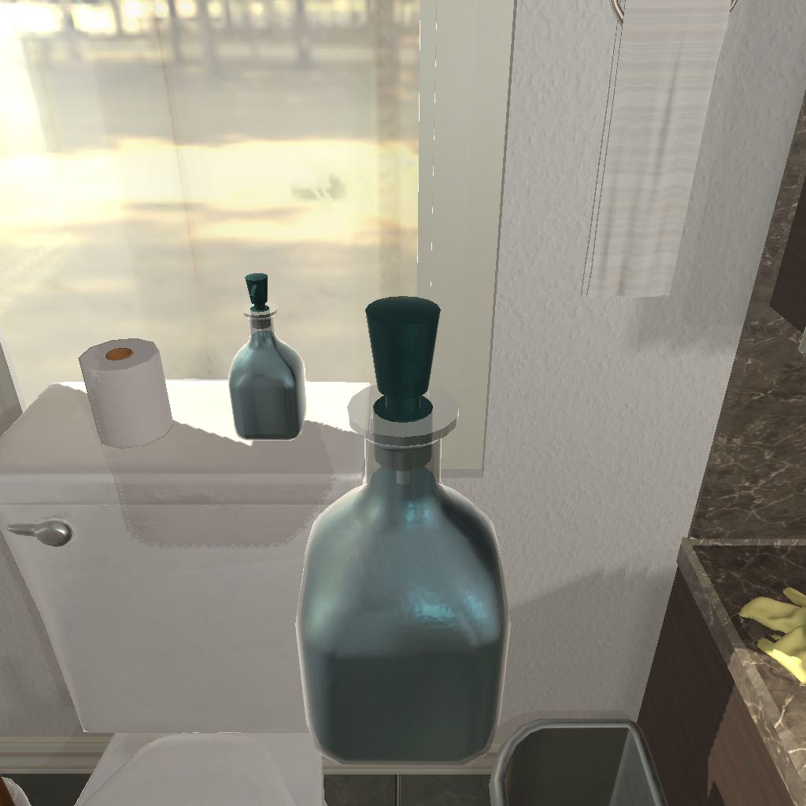

---------------------------------------------------------task: 27---------------------------------------------------------
--------------------------------------------------------------------------------------------------------------------------------------------------------------------
--------------------------------------------------------------------------------------------------------------------------------------------------------------------
Step:--------------------------------------------------------------------------16-------------------------------------------------------------------------------
----------------------------------------
VLM Prompt:
Image1:
Image2:
Image3:
**Instruction**
1. Analyze the provided images to identify all visible household objects and compare the difference between images (e.h. whether the object is opened or not and taken on hand or not), focusing on those relevant to the task description "find two soapbottle and put them in garbagecan."
2. Use the analysis of images and the task hint "The agent must find an object of the desired type, pick it up, find the correct location to place it, put it down there, then look for another object of the desired type, pick it up, return to previous location, and put it down there with the other object." to answer the question: what is the most reasonable action in the choices for the task description "find two soapbottle and put them in garbagecan"?
3. Decide and write the answer using the template: The answer is: (i): , where i is the real number. If there is no desired object in images, search every place based on **Initial Observation** to find the object. And if no one is exactly correct, choose a similar answer.
**Initial Observation**
You are in the middle of a room. Looking quickly around you, you can see countertop (1), sinkbasin (1-2), sink (1-2), garbagecan (1), drawer (1-2), toilet (1), handtowelholder (1)
**Answer Choices**
(1): go to countertop 1
(2): go to sink 1
(3): go to drawer 1
(4): go to drawer 2
(5): go to sink 2
(6): go to sinkbasin 2
(7): go to toilet 1
(8): go to handtowelholder 1
(9): put soapbottle 2 in/on sinkbasin 1
(10): clean soapbottle 2 with sinkbasin 1
(11): clean soapbottle 2 with sink 1
(12): clean soapbottle 2 with sink 2
(13): clean soapbottle 2 with sinkbasin 2
(14): examine soapbottle 2
(15): examine sinkbasin 1
**Answer**
Let's think step by step by following the instructions.
----------------------------------------
----------------------------------------
Original Response:
Image Analysis:
- In Image 1, we can see a garbage can and two soap bottles on a countertop.
- In Image 2 and Image 3, we see one of the soap bottles from Image 1 now placed on the sink basin.
Task Analysis:
- The task requires finding two soap bottles and putting them in the garbage can.
- From the initial observation, we know there is a garbage can in Image 1.
- The images show that we have already found one soap bottle and placed it on the sink basin.
Answer Selection:
- Considering the task and the images, the next reasonable action would be to find the second soap bottle.
- Since we only see one soap bottle in Image 2 and Image 3, we need to look for the second soap bottle, which could be on the countertop or in a drawer.
The answer is: (1): go to countertop 1. If the second soap bottle is not there, the next step would be to check the drawers, as per the initial observation.
----------------------------------------
----------------------------------------
>>> Refine Original VLM Response and Get Pure Action: go to countertop 1
----------------------------------------
-----------------------------------------------------------------
Running time: 19.70054864883423 seconds
Total Money: 17.33626999999999
-----------------------------------------------------------------
-----------------------------------------------------------------
Text Observation:You arrive at loc 0. On the countertop 1, you see a faucet 2, a cloth 1, and a soapbar 3.
-----------------------------------------------------------------
UNSUCCEED